New Microsoft Edge
在新的Win10中，Edge浏览器使用自己会爆炸的内核强行捆绑在系统中，然而用户并不买账，在用的时候一系列无响应和兼容性问题，使得Edge浏览器的市场再创新低，过了三年时间，终于，Edge还是使用了Chromium的内核……
但是这次的新Edge，相比于国内一些臃肿花哨的浏览器，新Edge却是继承了微软的设计风格。
Microsoft Edge by the Chromium在四月初发布了预览版，分为Canary Channel的日更版本和Dev Channel的周更版本。
具体的东西后面再说，如果你使用的是Win10，那么点击访问下载链接
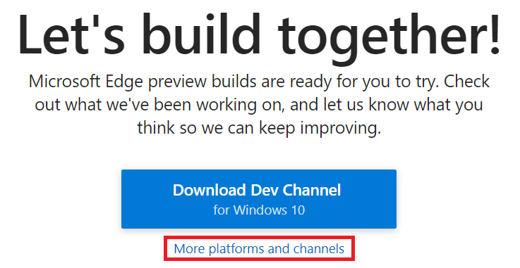
建议选择中间的__周更__版本，少一点折腾
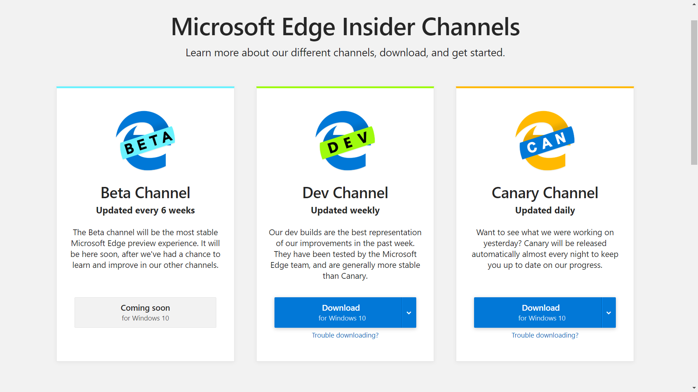
下载之后点开文件就能直接安装上车了
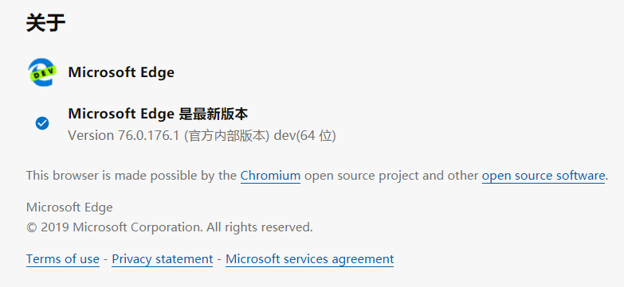
经过我的使用对比，Edge打开速度的确是快，就算是以前的版本，在高中的古董机上打开速度也快于同类Chromium内核浏览器，如今的版本依旧保留了原来的快速和低占用，相比于开多个标签页的Chrome吃内存来说，真的做了负优化。
打开就是新标签页，目测和必应一样，每日一图，可以选择关闭，以及一些可以关闭的提要。
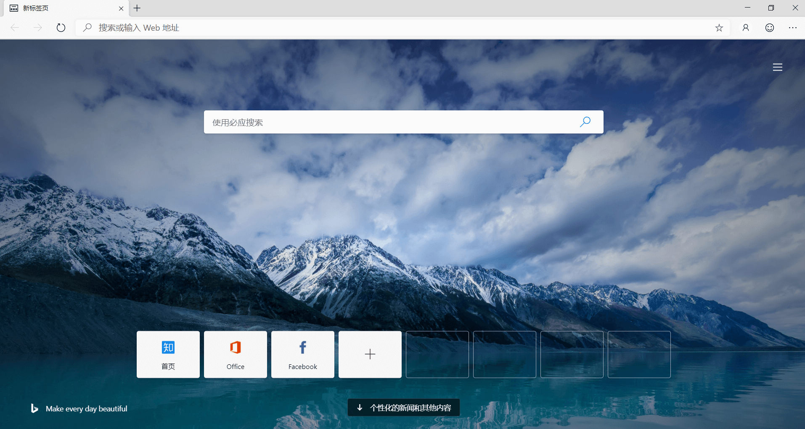
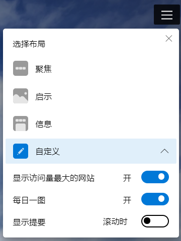
与Chrome不同的，新Edge可以非常快速顺利的进行同步。默认和你电脑上登陆的微软账户一样，可以同步书签设置，也可以从别的浏览器导入数据，没有任何不便，我这里是从Firefox导入书签、历史记录、密码等，可以说是秒同步。
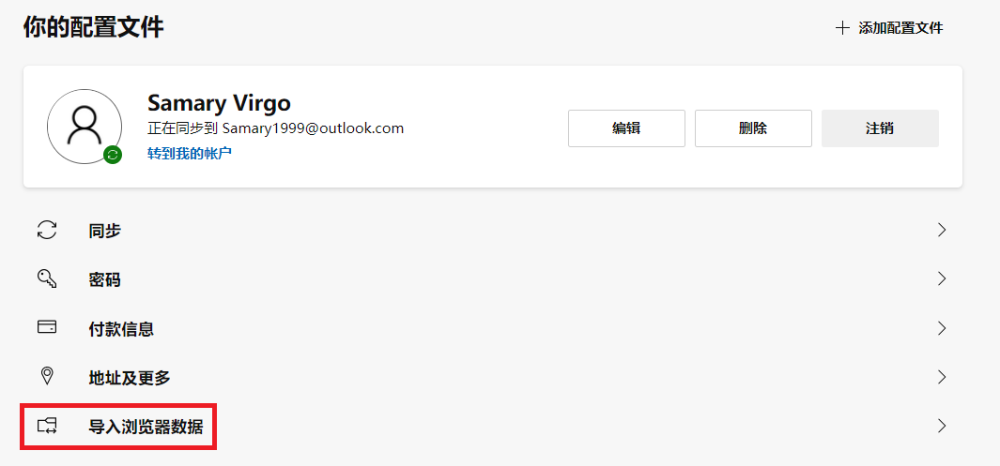
关于隐私和权限
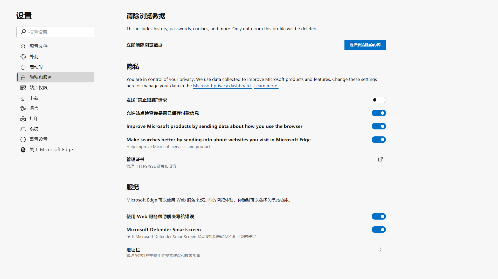
还有就是，自带和Chrome一样的网页翻译功能，而且还可以兼容Chrome的拓展，一边可以从微软拓展商店下载，我看了看目前的数目不是很多，但是另一边可以从谷歌的拓展商店添加，并且能很好的兼容。
接下来是修改默认搜索引擎，这个比较隐蔽，在上图的最下面，点进去之后可以修改默认的搜索引擎
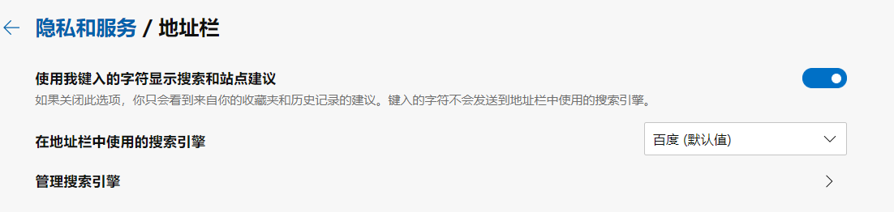
目前的版本，可以添加中文，但是不能使用中文来显示，这里是灰色的选不了
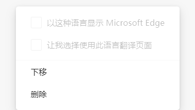
解决方法：
- 首先在浏览器的设置里添加中文
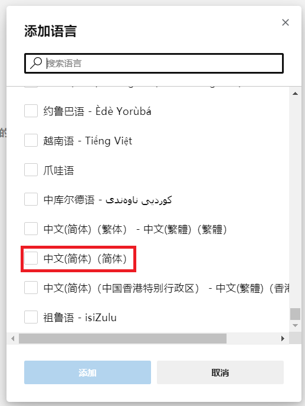
- 然后进入下图路径，然后关闭浏览器，把__en-us.pak__这个文件的名字改成__en-us.pak.bak__，没有后缀的自行百度
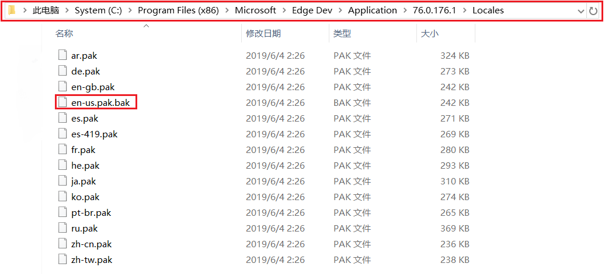
- 重启之后就是中文了
最后一点，和Chrome家族同样的，有个___实验室___ ，只需要在地址栏输入 __edge://flags/__，暗色主题也在这里。
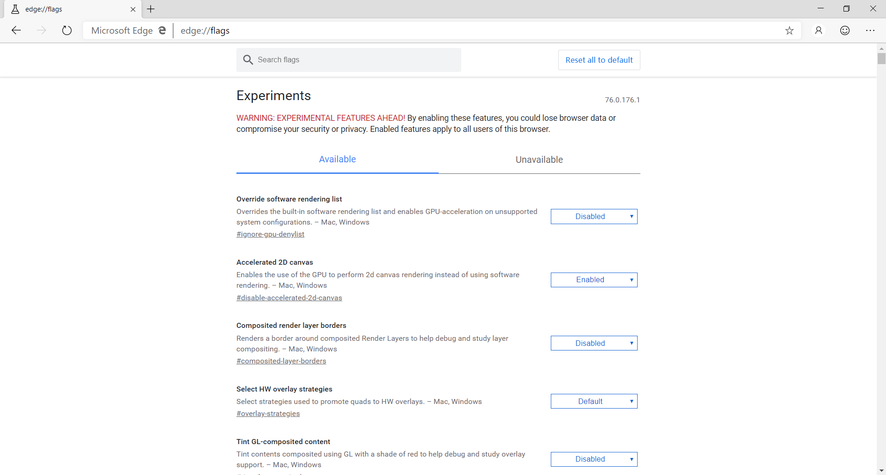
就这些啦，目前新Edge可以满足我的日常需求，作为主力浏览器还是不错的。
哦，还有就是今天高考，学弟学妹们高考加油，冲鸭🤣